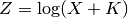

curvefit – Curve Fit program¶
From the introduction:
This program uses a least squares procedure to find the constants in an equation in the form Y=A+B*Z+C*Z^2+D*Z^3+E*Z^4 where Z=f(X) and X and Y are data pairs. You are first asked to input the data pairs. A data pair number is used so changes and corrections can be made. If an error is made when entering the data pair number, enter <D> at the X prompt. After all the data is entered, you are asked to select f(X). If, for instance, X covers many more decades than Y, you might try Z=log(X). You are next asked what degree of equation you want–for instance if you want Y=A+B*Z+C*Z^2, enter <2>. Finally, you are asked to choose between procedures that minimize relative or absolute error. If the Y data covers many orders of magnitude, small errors at large Y will cause large errors at small Y when using the absolute routine. If the Y data contains 0, the relative routine cannot be used.
From the comments:
Adapted from Bob Dehoney’s “FITCURVE” program
Also from the comments:
Miller’s prog, p74 in “Basic Prog for S & E”
Presumably this: http://www.amazon.com/Basic-Programs-Scientists-Engineers-Miller/dp/0895880733
Therefore, the HamCalc program is a revision of Bob Dehoney’s “FITCURVE” program which is, in turn, a rewrite of a program in Miller’s book. It doesn’t seem valuable to attempt to preserve this revision of a revision. It seems that it would be more valuable to create the Gaussian Elimination from scratch.
See Linear least squares in Wikipedia.
This is relatively simple using numpy. See http://pingswept.org/2009/01/24/least-squares-polynomial-fitting-in-python/
Analysis¶
This program contains a rather complex matrix manipulation. There are several major sections to the code base.
- The overall processing. Acquire Data. Build Polynomial Fit Matrices. Solve Matrices. Display results.
- Build Matrices.
- Solve Matrices, also known as the “Gauss-Jordan routine”.
- The graphics display.
Overall Processing¶
390-530: Accumulate X-Y pairs: .
540: Assert that .
550-570: Get the relation. (1) (2) (3)  (4) . Each of these involves some additional processing to create .
-
1250 FOR N=1 TO NMAX :Z(N)=X(N) :NEXT N :RETURN
Input K and P;
1260 INPUT "Enter K,P ",DD,PP :FOR N=1 TO NMAX :Z(N)=(X(N)+DD)^PP :NEXT N :RETURN
Input K;
1270 INPUT "Enter K ",DD :FOR N=1 TO NMAX :Z(N)=LOG(X(N)+DD) :NEXT N :RETURN
Input K;
1280 INPUT "Enter K ",DD :FOR N=1 TO NMAX :Z(N)=EXP(X(N)*DD) :NEXT N :RETURN
580-590: Get the order of the polynomial, . Set  .
.
600: Assert that .
610-630: Get optimization goal: minimum relative error vs. minimum absolute error.
It appears that the next steps build Vandermonde Matrices. There are two variants.
- Minimize Relative Error: lines 1290 - 1470 builds the A and W matrices.
- Minimize Absolute Error: Lines 1480 - 1699 builds the A and W matrices.
640: Initailize the C vector, 
650: Find A,B,& C using Miller’s prog, p74 in “Basic Prog for S & E”. This is lines 820-1210, the “Gauss-Jordan routine”. See Gaussian Elimination.
660-790: Print X, Y, computed Y, error, and the five values in the C vector.
800: Final option to edit data, or plot the curve. Plotting is lines 1610-1770. See Graphics Display.
Build Matrices¶
See http://en.wikipedia.org/wiki/Vandermonde_matrix
Minimum Relative Error: lines 1290 - 1470 builds the A and W matrices.
![A = \begin{Bmatrix}
\sum{\frac{Z_n^0}{Y_n^2}}& \sum{\frac{Z_n}{Y_n^2}}& \sum{\frac{Z_n^2}{Y_n^2}}& \sum{\frac{Z_n^3}{Y_n^2}}& \sum{\frac{Z_n^4}{Y_n^2}} \\
\sum{\frac{Z_n}{Y_n^2}}& \sum{\frac{Z_n^2}{Y_n^2}}& \sum{\frac{Z_n^3}{Y_n^2}}& \sum{\frac{Z_n^4}{Y_n^2}}& \sum{\frac{Z_n^5}{Y_n^2}} \\
\sum{\frac{Z_n^2}{Y_n^2}}& \sum{\frac{Z_n^3}{Y_n^2}}& \sum{\frac{Z_n^4}{Y_n^2}}& \sum{\frac{Z_n^5}{Y_n^2}}& \sum{\frac{Z_n^6}{Y_n^2}} \\
\sum{\frac{Z_n^3}{Y_n^2}}& \sum{\frac{Z_n^4}{Y_n^2}}& \sum{\frac{Z_n^5}{Y_n^2}}& \sum{\frac{Z_n^6}{Y_n^2}}& \sum{\frac{Z_n^7}{Y_n^2}} \\
\sum{\frac{Z_n^4}{Y_n^2}}& \sum{\frac{Z_n^5}{Y_n^2}}& \sum{\frac{Z_n^6}{Y_n^2}}& \sum{\frac{Z_n^7}{Y_n^2}}& \sum{\frac{Z_n^8}{Y_n^2}}
\end{Bmatrix}](../../_images/math/c5343682f8c1e42c02a7e5f5e47d591b99fb8e55.png)
Minimize Absolute Error: Lines 1480 - 1699 builds the A and W matrices.
Solve Matrices¶
This is the Gauss-Jorden, or Gaussian Elimination algorithm.
Here’s the numpy solution.
http://pingswept.org/2009/01/24/least-squares-polynomial-fitting-in-python/
Here’s the Gaussian Elimination algorithm.
See http://en.wikipedia.org/wiki/Gaussian_elimination
There are three types of elementary row operations which may be performed on the rows of a matrix:
Type 1: Swap the positions of two rows.
Type 2: Multiply a row by a nonzero scalar.
Type 3: Add to one row a scalar multiple of another.
Phase 1. Get to Echelon Form.
For each row in a matrix, if the row does not consist of only zeros, then the left-most non-zero entry is called the leading coefficient (or pivot) of that row. So if two leading coefficients are in the same column, then a row operation of type 3 (see above) could be used to make one of those coefficients zero. Then by using the row swapping operation, one can always order the rows so that for every non-zero row, the leading coefficient is to the right of the leading coefficient of the row above. If this is the case, then matrix is said to be in row echelon form. So the lower left part of the matrix contains only zeros, and all of the zero rows are below the non-zero rows. The word “echelon” is used here because one can roughly think of the rows being ranked by their size, with the largest being at the top and the smallest being at the bottom.
Phase 2. Get to Reduced Echelon Form.
A matrix is said to be in reduced row echelon form if furthermore all of the leading coefficients are equal to 1 (which can be achieved by using the elementary row operation of type 2), and in every column containing a leading coefficient, all of the other entries in that column are zero (which can be achieved by using elementary row operations of type 3).
Graphics Display¶
TBD. This may involve matplotlib.
Implementation¶
There appears to be little value is scrupulously analyzing the GW Basic programming.
It seems simpler to make numpy a dependency and use it. The variant Vandermonde matrices for minimum relative error vs. minimum absolute error seem to be of some value.
However.
numpy for Python 3.2 is not the easiest thing to install. And we only want a small piece of numpy: the Gaussian Elimination algorithm. It does make a small amount of sense to provide a streamlined Gaussian Elimination.
hamcalc.math.curvefit – Curve Fit program
This is linear least squares curve fitting.
There are several important features.
Data Collection¶
A simple list-of-tuple structure is used to contain the sample data points. The client application will probably have fancy input and output features to gather the collection of data points.
Transformation¶
There are four transformation functions that can be applied to the X values for the data points.
- NUL: X_i -> X_i does nothing
- POW(K,P): X_i -> (X_i+K)**P
- LOG(K): X_i -> log(X_i+K)
- EXP(K): X_i -> exp(K*X_i)
Currently, the function is provided as a string name, to make the interface simpler for RESTful web services and JSON encoding the arguments.
Polynomial Curve Fitting¶
The polynomial degree (0 to 5) must be provided.
Additionally, there’s a specific function to be minimized.
- Absolute Error.
- Relative Error – undefined if Y is ever zero.
Gaussian Elimination¶
From Wikipedia
http://en.wikipedia.org/wiki/Gaussian_elimination
Pseudo-Code
for k = 1 ... m:
#Find pivot for column k:
i_max := argmax (i = k ... m, abs(A[i, k]))
if A[i_max, k] = 0
error "Matrix is singular!"
swap rows(k, i_max)
#Do for all rows below pivot:
for i = k + 1 ... m:
#Do for all remaining elements in current row:
for j = k + 1 ... n:
A[i, j] := A[i, j] - A[k, j] * (A[i, k] / A[k, k])
#Fill lower triangular matrix with zeros:
A[i, k] := 0
Overall Test Cases¶
See http://en.wikipedia.org/wiki/Linear_least_squares_(mathematics)#Motivational_example
>>> import hamcalc.math.curvefit as curvefit
>>> DATA = [ (1,6), (2,5), (3,7), (4,10) ]
>>> [ round(x,3) for x in curvefit.fit( DATA ) ]
[3.5, 1.4]
The output vector has the following interpretation.
For higher-order polynomials there will be more terms.
>>> import hamcalc.math.curvefit as curvefit
>>> DATA = [ (1,6), (2,5), (3,7), (4,10) ]
>>> [ round(x,3) for x in curvefit.fit( DATA, minimize='rel' ) ]
[3.803, 1.13]
- hamcalc.math.curvefit.argmax(indices, A, column, f=<built-in function abs>)[source]¶
Locate the argument for which the function of A[i,column] is maximized for i in indices.
>>> import hamcalc.math.curvefit as curvefit >>> A = [ ... [ 2, 1,-1, 8], ... [-3,-1, 2,-11], ... [-2, 1, 2, -3], ... ] >>> curvefit.argmax( range(1,3), A, column=3 ) 1
Parameters: - indices – index values for rows to examine
- A – Matrix
- column – column to examine.
- f – Function to use, default is abs().
- hamcalc.math.curvefit.data_transform(points_raw, name, args=None)¶
Various transformation functions.
Parameters: - points_raw – Sequence of (x,y) pairs.
- name – Name of transformation: NULL, POW, LOG, EXP.
- args – dictionary of arguments, ‘k’ and ‘p’.
Returns: Sequence of (f(x),y) pairs.
>>> import hamcalc.math.curvefit as curvefit >>> DATA = [ (1,6), (2,5), (3,7), (4,10) ] >>> curvefit.data_transform( DATA, "NULL" ) [(1, 6), (2, 5), (3, 7), (4, 10)] >>> curvefit.data_transform( DATA, "POW", { 'k': 3, 'p': 2 } ) [(16, 6), (25, 5), (36, 7), (49, 10)] >>> curvefit.data_transform( DATA, "LOG", { 'k': 5 } ) [(1.791759469228055, 6), (1.9459101490553132, 5), (2.0794415416798357, 7), (2.1972245773362196, 10)] >>> curvefit.data_transform( DATA, "EXP", { 'k': 1 } ) [(2.718281828459045, 6), (7.38905609893065, 5), (20.085536923187668, 7), (54.598150033144236, 10)]
- hamcalc.math.curvefit.fit(points_raw, transform='NULL', args=None, order=2, minimize='absolute')¶
Curve Fit.
Parameters: - points – is a sequence of (x,y) tuples
- transform – is the name of the transform function. “NULL”, “POW”, “LOG”, “EXP” are the defined functions. The “POW” function requires both “k” and “p”. The “LOG” and “EXP” functions require “k”.
- args – is a dictionary with values of “k” or “p” or both for the transformation function.
- order – Polynomial order (0 to 5).
- minmize – is either “absolute” or “relative”.
Returns: Coefficients for the polynomial that fits the points.
- hamcalc.math.curvefit.gauss(A)[source]¶
Gaussian Elimination on an m row by n column matrix A. n is expected to be m+1 when solving simultaneous linear equations.
Parameters: A – is a “list-of-lists” matrix with m rows. Each row is an n-element list. Returns: New matrix in reduced echelon form. >>> import hamcalc.math.curvefit as curvefit >>> A = [ ... [ 2, 1,-1, 8], ... [-3,-1, 2,-11], ... [-2, 1, 2, -3], ... ] >>> B= curvefit.gauss( A ) >>> [ [ round(x) for x in row ] for row in B ] [[1, 0, 0, 2], [0, 1, 0, 3], [0, 0, 1, -1]]
>>> C = [ ... [ 1, 3, 1, 9], ... [ 1, 1,-1, 1], ... [ 3,11, 5, 35], ... ] >>> D = curvefit.gauss( C ) Traceback (most recent call last): File "/Library/Frameworks/Python.framework/Versions/3.2/lib/python3.2/doctest.py", line 1288, in __run compileflags, 1), test.globs) File "<doctest default[1]>", line 1, in <module> D = curvefit.gauss( C ) File "/Users/slott/github/local/HamCalc-2.1/python/hamcalc/math/curvefit/__init__.py", line 124, in gauss raise ValueError( "Matrix is singular!" ) ValueError: Matrix is singular!
- hamcalc.math.curvefit.min_absolute(points, order)¶
Minimize Absolute Error.
>>> import hamcalc.math.curvefit as curvefit >>> DATA = [ (1,6), (2,5), (3,7), (4,10) ] >>> curvefit.min_absolute( DATA, 4 ) [[4, 10, 30, 100, 28], [10, 30, 100, 354, 77], [30, 100, 354, 1300, 249], [100, 354, 1300, 4890, 875]]
- hamcalc.math.curvefit.min_relative(points, order)¶
Minimize Relative Error; requires Y != 0.
>>> import hamcalc.math.curvefit as curvefit >>> DATA = [ (1,6), (2,5), (3,7), (4,10) ] >>> curvefit.min_relative( DATA, 4 ) [[0.09818594104308388, 0.20900226757369614, 0.5314512471655329, 1.538798185941043, 0.6095238095238095], [0.20900226757369614, 0.5314512471655329, 1.538798185941043, 4.8808390022675745, 1.3952380952380952], [0.5314512471655329, 1.538798185941043, 4.8808390022675745, 16.506961451247165, 3.8523809523809525], [1.538798185941043, 4.8808390022675745, 16.506961451247165, 58.425328798185944, 12.023809523809526]]
Quirks¶
Because GW-Basic variables have a default value of zero, sums are reset after they’re used.
Look, for example at lines 1290 to 1470. Also look at lines 1480 to 1600. In both cases, sums are accumulated assuming an initial value of zero. After the sums are used, the variables are reset back to zero.